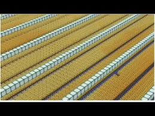

March 20, 2025
Getting Started with Wheat Farming
Wheat is one of the easiest crops to farm in *Hypixel Skyblock*, making it a great choice for new players looking to earn money and Farming XP.
Why Choose Wheat?
| Factor | Pros | Cons |
|---|---|---|
| Ease of Farming | Very easy | Lower profits |
| Farming XP | Decent XP gain | Slower than Sugar Cane |
| Profitability | Steady income | Better alternatives exist |
| Replanting | Easy with Harvesting enchant | Requires replanting manually |